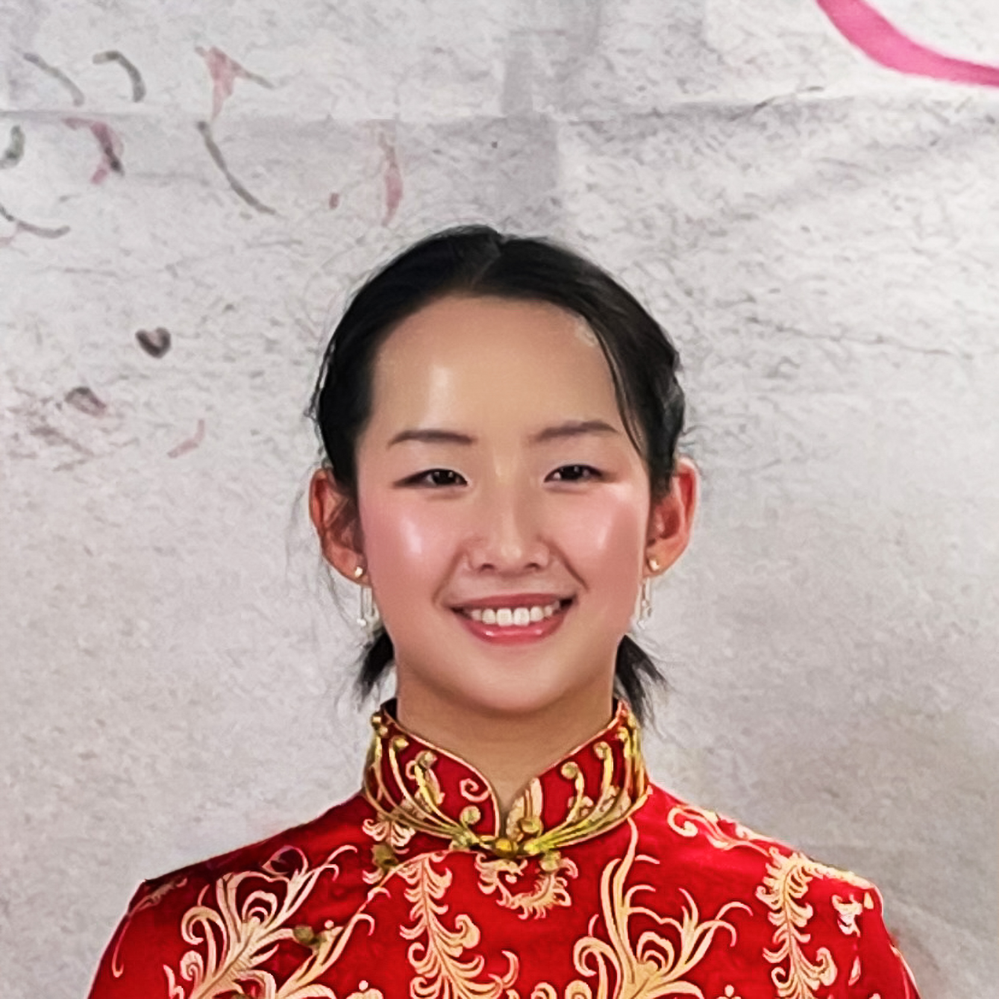
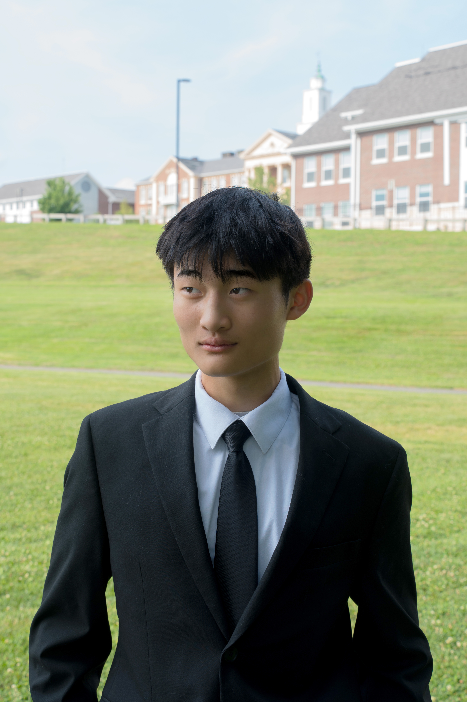
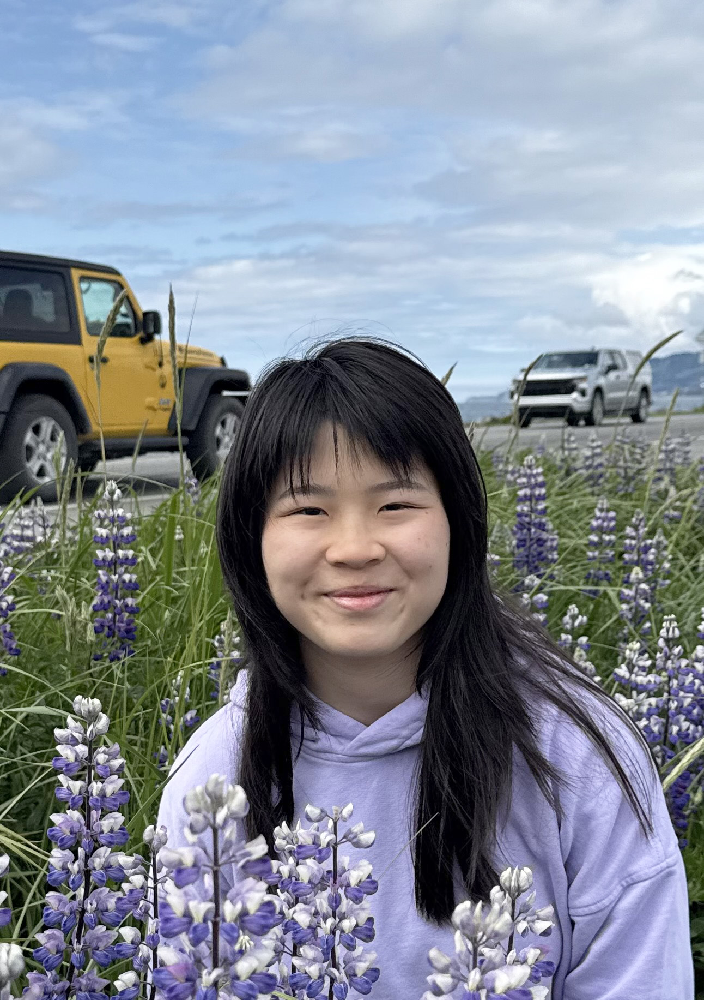
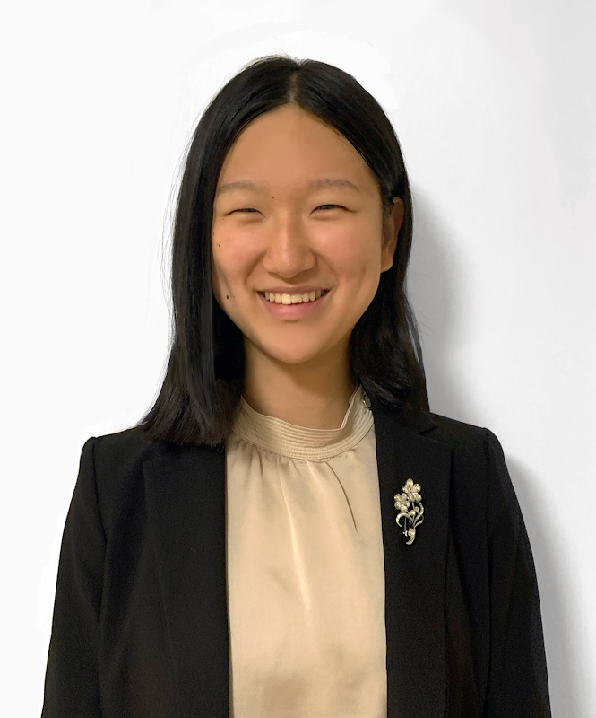
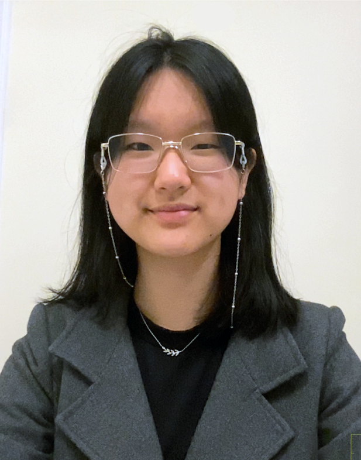
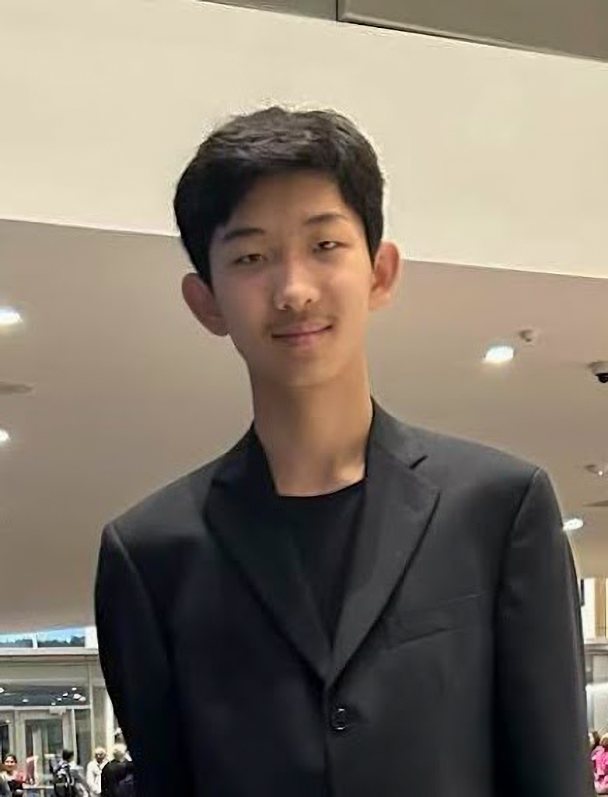

Concert Program
- 🎹 Bella Wang (16) Mozart - Fantasy in D minor, K. 397
-
🎹 Anray Sheng (16)
Beethoven - Piano Sonata No. 28, Op. 101
I. Allegretto, ma non troppo
II. Vivace alla Marcia
III. Adagio, ma non troppo, con affetto
IV. Allegro -
🎹 Bella Wang (16)
Chopin - Etude Op. 25, No. 7 in C-sharp minor
Ravel - Alborada del gracioso (from Miroirs) -
🎹 William Sun (16)
Chopin - Piano Sonata No. 3 in B minor, Op. 58
I. Allegro maestoso
II. Scherzo: Molto vivace
III. Largo
IV. Finale: Presto non tanto - — INTERMISSION —
-
🎹 Sophia Li (16)
Beethoven - Piano Sonata No. 30 in E major, Op. 109
I. Vivace ma non troppo
II. Prestissimo
III. Andante molto cantabile ed espressivo - 🎹 Gina Li (16) Schumann - Symphonic Etudes, Op. 13 (1852 version)
-
🎹 Angela Wang (16)
Schumann - Piano Concerto in A minor, Op. 54
I. Allegro affettuoso
II. Intermezzo: Andantino grazioso
III. Allegro vivace
Meet Our Performers

Clara Liu 刘语馨
Age 16 • Performing Schumann: Fantasie in C Major, Op. 17
Musical Journey
Clara Liu is a rising junior at Needham High School. She has been playing piano for over eight years, spending the past five with Mr. Fan Li. Under his expert guidance, Clara has rapidly grown as a pianist, earning multiple First and Second Prize awards in international piano competitions. In 2025, she received a First Prize award in the Australian International Music Competition North American Division at Harvard, and was invited to move on to the final round in Australia. Later that year, Clara received a Second Place award at the Miclot International Music Competition and performed at Lincoln Center in New York.
Physics Leadership
Driven by her passion for physics, Clara reinstated and now serves as president of Needham High School's Physics Team. This past year, she organized and led the team to make its first appearance in the international PhysicsBowl, where they competed against 572 schools and more than 11,600 students worldwide. Clara was the highest-scoring member of the team, placing in the top 6% internationally in Division I. Through the Physics Team, she hopes to promote STEM within her school and encourage more students to explore physics.
Academic Excellence & Project Experience
Clara is also greatly interested in computer science and mathematics. As a two-time American Computer Science League Senior Division Finalist, she possesses strong problem-solving and programming abilities. In freshman year, she was selected to participate in the MIT Beaver Works Summer Institute (BWSI) GWPAC Outreach Program, where she explored the software behind autonomous robotics. She has also participated in several project-based engineering programs, including the MIT BWSI CRE[AT]E Challenge, where she collaborated with a team to develop assistive technology, and the Asian American Academy of Science and Engineering Research and Product Design Competition at MIT, where her team won Second Place and received a $1,500 scholarship for their innovative project. In addition, this summer Clara was accepted into Boston University’s PROMYS Pathways, an intensive mathematics program that further strengthened her logical reasoning. Not only is Clara strong in STEM, she has also gone far in the National History Day research competition. The website exhibition that she programmed placed first at regionals and reached the state finalist level.
Community Service
Clara values using her knowledge to empower younger generations. In previous years, she has co-taught an Introduction to Python and Artificial Intelligence course at Century Chinese School. Currently, she works as a Teaching Assistant at MGenius Academy, where she mentors young students through hands-on engineering and STEM projects. Clara also volunteers as a tutor at her local library, supporting middle-school students across all academic subjects, and has accumulated over 100 hours of community service.
Additional Interests
Beyond academics, Clara enjoys oil painting recreationally. In 2026, she was recognized with a Scholastic Art & Writing Awards Silver Key for her artwork. She is also active in athletics, having competed in club volleyball for several years. Alongside her teams, Clara has earned multiple Gold and Silver tournament medals.
🎵 Tonight's Performance
Performing: Schumann: Fantasie in C Major, Op. 17
演奏曲目: 舒曼：C大调幻想曲，作品17号

Eric Liu 刘乐山
Age 16 • Performing Ravel: Le Tombeau de Couperin
🎹 Musical Background
Eric Liu is a rising junior at Belmont High School (BHS). He began studying piano at the age of seven and has been under the guidance of Mr. Fan Li since 2020. Eric has also participated in several music competitions, earning first place in the Crescendo International Music Competition in 2023 and the Miclot International Music Competition in 2025.
Academic Leadership
At BHS, Eric is a straight-A student with a strong interest in mathematics and the sciences. In addition to taking AP Physics 2 and AP Calculus BC at BHS, he independently studied AP Physics 1, AP Physics C: Mechanics, AP Physics C: Electricity and Magnetism, and AP Chemistry, earning a score of 5 on each exam and receiving the AP Scholar with Distinction Award. To further challenge himself in advanced physics, Eric participated in the 2025 F=ma exam, the qualifying competition for the USA Physics Olympiad (USAPhO), and scored approximately in the 80th–85th percentile based on the published score distribution. He also earned a perfect score on the National Latin Exam.
Athletics
Eric is currently a B-rated competitive fencer with USA Fencing and has competed in regional and national tournaments since the age of 10. He placed in the top 16 at the USA Fencing Summer Nationals in 2020 and has earned multiple top-eight finishes at regional and New England fencing tournaments. In addition to fencing, Eric holds a first-degree black belt (1st Dan) in Taekwondo and earned first place at the Massachusetts State Taekwondo Championship.
Service and Leadership
Furthermore, Anray is passionate about service and leadership. As a member of the leadership team in Project 351, a nonprofit that empowers youth service across Massachusetts, he has led numerous initiatives from food and clothing drives to a 9/11 Tribute Service. He was honored to represent Project 351 at the Massachusetts Association of School Superintendents (M.A.S.S.) alongside Civil Rights activist Leona Tate, advocating for equity in public education. His dedication to giving back also extends to volunteering with the Immigrant Family Services Institute, Chinese Friends of Needham, where he hosted the town's Chinese New Year Festival, and several summer programs, where he serves as a camp counselor and tutor. For his commitment, over 150 hours of service annually, he has received the President's Gold Volunteer Service Award for three consecutive years.
🎵 Tonight's Performance
Performing: Ravel: Le Tombeau de Couperin
演奏曲目: 拉威尔：《库普兰之墓》

Jayden Zheng 郑卓翰
Age 16 • Performing Beethoven: Piano Sonata No. 23 in F Minor, Op. 57, “Appassionata”
🎹 Musical Background
Jayden attends Newton South High School, where he is a rising junior. He lives in Newton,
Massachusetts, with his parents and twin brother.
Jayden has been studying piano with Fan Li for ten years, and he has won second place at the
Miclot
International Music Competitions and the Crescendo International Music Competitions. He has
performed in Lincoln Center New York and John Knowles Paine Concert Hall at Harvard.
At school, Jayden is an active member of the science team, where he prepares for and
competes in Science Olympiad alongside his teammates. He has helped Newton South earn
fourth place at the Massachusetts state competition as well as individual awards. He has also
participated in model bridge building and mathematics competitions.
Outside the classroom, Jayden is a dedicated Boy Scout and is currently working to become a
Life Scout. Scouting has given him opportunities to participate in community service projects,
outdoor trips, and leadership development as he works toward higher ranks. His projects have
included repairing old fire hydrants and restoring walkways in local parks, allowing him to
contribute to his community. His favorite part of Scouting is spending time outdoors, whether
through hiking, camping, or backpacking.
Jayden is always open to trying new things and recently picked up the sport of ultimate frisbee.
In his free time, he enjoys listening to the radio, spending time with family, and reading books.
His interests include astronomy, card games, and exploring new restaurants.
🎵 Tonight's Performance
Performing:Piano Sonata No. 23 in F Minor, Op. 57, “Appassionata”
演奏曲目:贝多芬：F小调第23号钢琴奏鸣曲，作品57号，“热情”

Jeffery Zheng 郑卓儒
Age 16 • Performing Schubert: Moments Musicaux, Op. 94
🎹 Musical Journey
Jeffrey Zheng is a rising junior at Newton South High School. He currently studies piano with
Fan Li. Beyond music, Jeffrey enjoys exploring a variety of academic, extracurricular, and
personal interests.
Outside of music, Jeffrey spends his time pursuing a variety of interests. He is a member of his
school's Science Team and competes in Science Olympiad. He is the founder and president of
Hands for Paws Club, a club which supports local animal shelters through volunteering,
donation drives, and community initiatives.
Jeffrey created and leads his own newsletter, managing a team of writers to produce articles for
a growing audience. The newsletter now reaches thousands of readers each month around the
world. Beyond writing, he enjoys learning French and exploring French language, history, and
culture.
Outside of his other pursuits, Jeffrey is a member of his school's soccer and volleyball teams
and trains intensely in distance running and fitness. Motivated by the story of endurance athlete
Chris Nikic and the reminder that "the ego is the enemy of progress," a mindset shared by
vegan athlete Rich Roll, Jeffrey strives to approach challenges with consistency, perseverance,
and a commitment to continuous improvement.
🎵 Tonight's Performance
Performing: Schubert: Moments Musicaux, Op. 94
演奏曲目: 舒伯特：《音乐瞬间》，作品94号

Jolene Wong 黄译漪
Age 16 • Performing Beethoven: Piano Concerto No. 3 in C Minor, Op. 37
🎹 Musical Journey
Jolene is a rising junior at Newton South High School in Newton, Massachusetts. She began
playing piano at age seven and has spent the past nine years studying with Mr. Fan Li, a
renowned Massachusetts pianist and recipient of multiple Outstanding Teacher Awards.
Through music, Jolene has found both joy and inspiration. She has earned recognition in
several national and international piano competitions, including second place in the 2022
Crescendo International Music Competition after performing Little Floating Bamboo Raft at
Carnegie Hall. In 2023, she returned to Carnegie Hall to perform Etude Op. 10 No. 5, “Black
Keys,” and won first place in the Little Mozarts International Competition. She also received
Second Prize in both the 2023 Charleston International Piano Competition and the 2025
Virtuoso Music Competition. In 2025, Jolene was featured as a piano soloist with the
Immaculata Symphony Orchestra under the direction of Professor Joseph Gehring in
Pennsylvania. Performing with more than 45 musicians deepened her appreciation for
listening, collaboration, and the shared beauty of ensemble music.
Jolene carries the same dedication, discipline, and creativity she has developed through piano
into her leadership and academic activities. In middle school, she served as co-captain of the
Newton Speech Team, where she encouraged teammates and earned numerous awards in
Massachusetts Middle School Speech League tournaments, including recognition in a mixed
middle and high school tournament. She continued speech in high school, earning awards in
Massachusetts Speech & Debate League tournaments and placing second in Declamation at
the Cavalier Invitational, a national tournament in North Carolina. At Newton South, she is also
the managing editor of the Reflections Literary Magazine, where she supports submissions,
publication planning, meetings, and fundraising through advertisement outreach and donor
communication. In addition, she is the co-founder of the Brown Middle School Math Study
Group, which serves 10–15 younger students each year and reflects her joy in helping others
learn in a welcoming, well-organized environment.
Outside of school, Jolene finds joy in giving back and working with children. Through the Back
to Bath Project, tutoring students in China, and volunteering in summer programs, she shares
her love of music and learning while helping younger students feel supported, encouraged,
and inspired. These meaningful experiences have earned her the President’s Volunteer
Service Award. In her free time, she enjoys reading, traveling, drawing, and spending time with
family and friends.
Throughout her piano journey, Mr. Li has been more than a teacher to Jolene. His guidance,
care, and encouragement have helped her build confidence, overcome challenges, and
understand the value of perseverance. Jolene is deeply grateful for the lasting impact he has
had on her growth as both a musician and a person.
🎵 Tonight's Performance
Performing: Beethoven: Piano Concerto No. 3 in C Minor, Op. 37
演奏曲目: 贝多芬：C小调第三钢琴协奏曲，作品37号

William Sun 孙华威
Age 16 • Performing Chopin's Sonata Op. 58
🎹 Musical Journey
William Sun（孙华威）is a rising junior at Belmont High School. He began studying piano with Mr. Fan Li at the age of five. In 2021, he received first place in the Crescendo International Music Competition and was invited to perform at Carnegie Hall.
📚 Academic Excellence
At Belmont High School, William is a member of the Math Team and Science Team, where he participates in academic competitions and collaborative problem-solving. He has completed multiple Advanced Placement courses and was recognized as an AP Scholar with Distinction. This summer he participated in Inspirit AI Scholars and Summit STEM Fellowship. His academic interests include science, mathematics, and computer science.
🎷 Musical Versatility
In addition to piano, William is a dedicated saxophonist. He plays alto saxophone in Belmont High School's Wind Ensemble and participates in several other music groups, including the Marching Band, Jazz Ensemble, and Winter Winds. He is also a member of the Tri-M Music Honor Society. William has performed with selective ensembles such as the John Philip Sousa National High School Honors Band, the Western International Band Clinic, and the MMEA Junior and Senior District Festivals. In addition to performance, he has explored composition and recently wrote a piece for the Boston Sax Quartet.
💖 Service & Mentorship
William devotes significant time to service and mentorship. He has interned at Powers Music School, teaches through Belmont Free Lessons, and serves as a high school mentor for the Middle School Math Team. He has also worked as a counselor at various summer camps and has been a teaching assistant at Newton Chinese School for the past two years.
🏐 Athletics & Interests
Outside the classroom and concert hall, William has played varsity volleyball since he was a freshman, and also has ten years of experience in hockey, and played on the JV team. He also competes at the club level with MVP Academy's top U16 team. In his free time, he enjoys spending time with friends and playing volleyball recreationally.
🎵 Tonight's Performance
Performing: Chopin - Piano Sonata No. 3, Op. 58
演奏曲目: 肖邦 - 钢琴奏鸣曲第三首，作品58号
William Sun 孙华威
Age 16 • Performing Chopin's Sonata Op. 58
🎹 Musical Journey
William Sun（孙华威）is a rising junior at Belmont High School. He began studying piano with Mr. Fan Li at the age of five. In 2021, he received first place in the Crescendo International Music Competition and was invited to perform at Carnegie Hall.
📚 Academic Excellence
At Belmont High School, William is a member of the Math Team and Science Team, where he participates in academic competitions and collaborative problem-solving. He has completed multiple Advanced Placement courses and was recognized as an AP Scholar with Distinction. This summer he participated in Inspirit AI Scholars and Summit STEM Fellowship. His academic interests include science, mathematics, and computer science.
🎷 Musical Versatility
In addition to piano, William is a dedicated saxophonist. He plays alto saxophone in Belmont High School's Wind Ensemble and participates in several other music groups, including the Marching Band, Jazz Ensemble, and Winter Winds. He is also a member of the Tri-M Music Honor Society. William has performed with selective ensembles such as the John Philip Sousa National High School Honors Band, the Western International Band Clinic, and the MMEA Junior and Senior District Festivals. In addition to performance, he has explored composition and recently wrote a piece for the Boston Sax Quartet.
💖 Service & Mentorship
William devotes significant time to service and mentorship. He has interned at Powers Music School, teaches through Belmont Free Lessons, and serves as a high school mentor for the Middle School Math Team. He has also worked as a counselor at various summer camps and has been a teaching assistant at Newton Chinese School for the past two years.
🏐 Athletics & Interests
Outside the classroom and concert hall, William has played varsity volleyball since he was a freshman, and also has ten years of experience in hockey, and played on the JV team. He also competes at the club level with MVP Academy's top U16 team. In his free time, he enjoys spending time with friends and playing volleyball recreationally.
🎵 Tonight's Performance
Performing: Chopin - Piano Sonata No. 3, Op. 58
演奏曲目: 肖邦 - 钢琴奏鸣曲第三首，作品58号